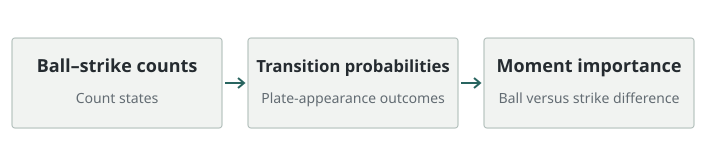

카운트 전이 확률로 계산한 상황 중요도
A measure of the importance of moment for ball-strike counts in a baseball plate appearance
다음 투구가 볼 또는 스트라이크일 때 타석 결과 확률이 얼마나 달라지는지로 카운트의 중요도를 정의했습니다.
- 방법: 카운트 전이 확률 → 타석 결과 확률
- 분석: 볼·스트라이크의 결과 차이와 패스트볼 구속


연구 문제
볼·스트라이크 카운트가 달라지면 같은 투구 결과의 의미도 달라집니다. 투구 한 번이 타석의 최종 결과에 주는 영향을 확률적으로 나타내고 투수의 행동과 함께 분석했습니다.
접근 방법
MLB Statcast 자료에서 12개 볼·스트라이크 상태와 아웃·출루 결과 상태의 전이 확률을 구성합니다. 이산 시간 마르코프 체인으로 각 카운트의 결과 확률을 계산하고, 다음 투구가 볼인 경우와 스트라이크인 경우의 차이로 Importance of Moment를 구합니다.
공개 코드에서는 카운트별 중요도와 패스트볼 평균 구속을 결합하고 전체 투수와 우수 투수 집단을 비교합니다.
기여
공동 제1저자로 참여한 연구입니다. 투구 결과를 카운트의 중요도와 함께 해석할 확률적 척도를 제안했습니다. 중요 상황의 구속과 우수 투수 집단의 특성은 관측된 관계이며, 인과 효과나 경기 전략의 효과를 검증한 결과로 확대하지 않습니다.